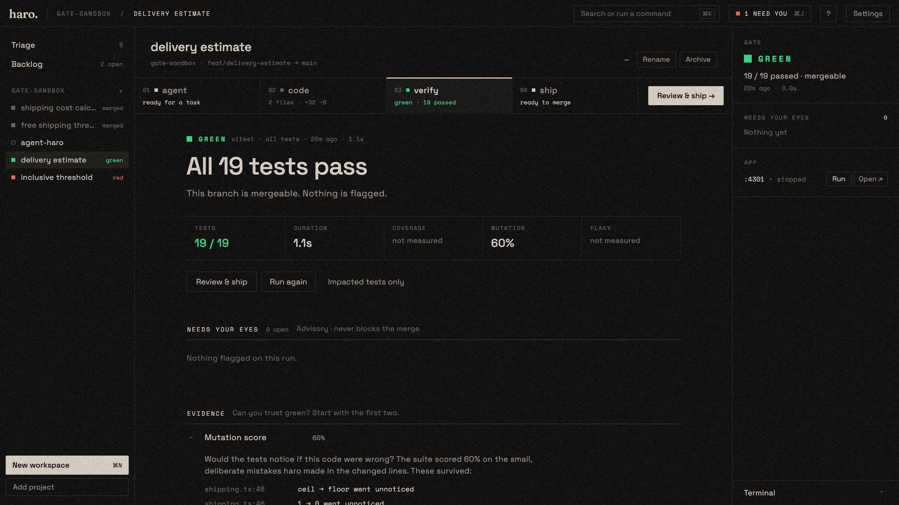

No agent’s work merges until the tests are green.
haro is a desktop app for running Claude Code agents side by side. Each agent works in its own git worktree, a test gate decides what’s safe to ship, and you watch it happen.

Run as many agents as you like. Ship only what’s proven.
One native window holds the whole loop for every task: agent chat, code, tests, a terminal and git. Four steps, the same every time.
Green is only the start of the proof.
The gate runs by itself when an agent finishes. You get the verdict first, then the few spots that need a human, then the evidence on demand. Merging stays locked until it’s green. Every verdict comes from running real code: haro never asks an AI whether AI-written code is correct.
See it running.

Download it, or build it.
You need git, Node or Python for your own project’s tests, and a Claude Code login. haro runs locally; your code never leaves your machine except through the agent you choose.
Early, built in the open, and it shows its cracks.
haro is used daily by the person building it. Expect rough edges and breaking changes before 1.0. Issues and pull requests are welcome.